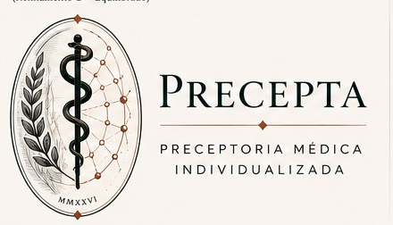

Estudante de Medicina
Mais estrutura, explicações e supervisão próxima para aprender a pensar clinicamente com segurança.
APRENDER COM SUPORTE
PRECEPTORIA MÉDICA INDIVIDUALIZADA
Casos clínicos realistas, preceptores especializados e uma mentora longitudinal para transformar cada decisão em desenvolvimento.
UM PRECEPTA PARA CADA MOMENTO
Mais estrutura, explicações e supervisão próxima para aprender a pensar clinicamente com segurança.
APRENDER COM SUPORTEVocê avalia, propõe e discute. O preceptor reduz o scaffolding à medida que sua autonomia cresce.
RACIOCINAR E DECIDIRMaior autonomia para conduzir casos, com retaguarda, feedback e acompanhamento do desenvolvimento.
CONSOLIDAR AUTONOMIACOMO FUNCIONA
Entre em casos clínicos contextualizados em cenários reais de cuidado.
Raciocine com o preceptor da área, com suporte calibrado ao seu nível.
Receba debrief, feedback e uma prescrição de aprendizagem útil.
Sofia integra a trajetória e ajuda a tornar visível o que praticar depois.
MENTORIA LONGITUDINAL
Ela não substitui os preceptores das áreas. Sofia conecta experiências, desenvolvimento e próximos passos para que o aprendizado não desapareça quando um caso termina.
MEU DESENVOLVIMENTO
PENSADO PARA A FORMAÇÃO MÉDICA NO BRASIL
O PRECEPTA nasce para representar decisões, recursos e transições plausíveis em diferentes contextos brasileiros — da APS à urgência, enfermaria, centro cirúrgico e terapia intensiva.
INTELIGÊNCIA ARTIFICIAL COM GOVERNANÇA
Casos e regras clínicas com fontes rastreáveis.
Arquitetura preparada para auditoria e atualização.
Limites explícitos entre aprendizagem, avaliação e decisão clínica.
Suporte adaptado ao nível e à trajetória do aprendiz.
SEU CORPO DE PRECEPTORES
UMA PLATAFORMA, TRÊS PORTAS DE ENTRADA
Escolha uma prática ou receba uma sugestão explicável a partir da sua trajetória.
Entre pela especialidade e pratique com o preceptor correspondente.
Veja trajetória, cobertura, confiança, generalização e prioridades sem reduzir tudo a uma nota.
DA PRÁTICA À AUTONOMIA CLÍNICA
Crie sua conta e escolha seu perfil de aprendizagem.